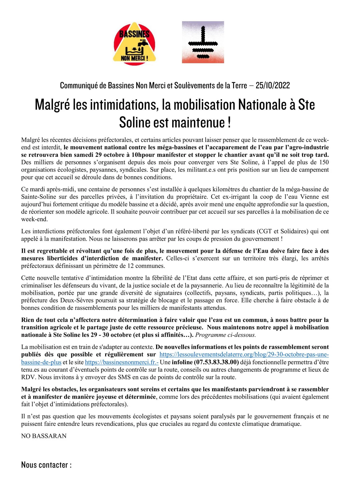
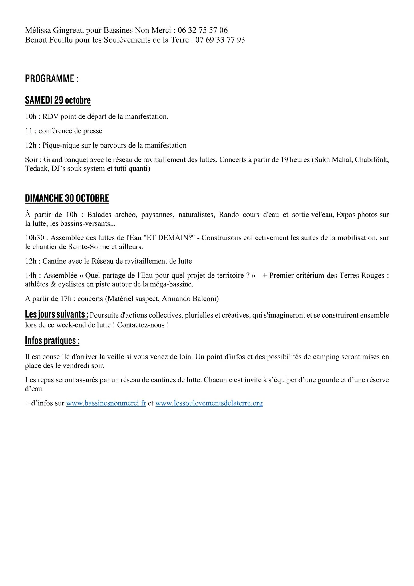
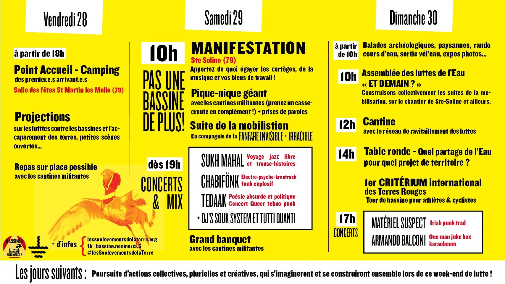

Publication d’archives
Communiqué de Bassines Non Merci et Soulèvements de la Terre
Date indiquée par Facebook · 26 octobre 2022
Texte conservé avec la publication
Contexte du dossier
Le 26 octobre, le PCF 79 relaie l’appel de Bassines Non Merci et des Soulèvements de la Terre pour les 29 et 30 octobre. Le commentaire publié le 1er novembre confronte ensuite le dispositif policier de Sainte-Soline à un arrêté préfectoral de restriction des usages de l’eau. Son auteur, non nommé dans ce texte, y voit une contradiction : la précarité hydrologique invoquée par l’administration est précisément au cœur de la contestation. Il s’appuie sur les propos d’Agnès Ducharne dans L’Humanité pour défendre une transformation des pratiques. Les chiffres avancés restent ceux de cette intervention militante de novembre 2022.



Sources
Archive rouge · export Facebook · AR-0002-FB-01825
À lire aussi · 5 et 6 janvier – Appel à mobilisation pour les procès de la résistance contre les bassines